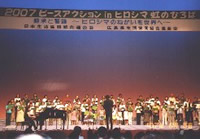
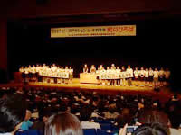
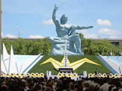

| 「核兵器も戦争もない平和な21世紀」を願って、８月４日から９日まで日本生協連の「ヒロシマ・ナガサキ行動」が行われました。ヒロシマ行動に埼玉県生協連１人、ナガサキ行動にさいたまコープ12人と医療生協さいたま26人（虹のひろばに参加）、埼玉県生協連１人が参加しました。
◆ヒロシマ行動◆ ８月５日～６日
５日／「被爆の証言③」＜証言者：植野浩さん＞
核実験は今日まで世界中で未臨界実験を除き2,052回行われている。人工の放射能にさらされているという点では人類みんなが被曝者である。ここで聞いたことを地域に帰って広げて欲しい。
「ヒロシマ虹のひろば」広島県立体育館
＜52生協 約1,200人参加＞
日本生協連の山下会長は「生協は安全・安心な商品の供給とあわせて平和を求める活動を30年続けてきました。核兵器は人間の手でなくすしかない」とあいさつされました。
黙祷後、秋葉忠利広島市長のあいさつ、高橋平和記念資料館元館長による「被爆の証言」、ヒロシマ虹のひろば合唱団による大合唱が行われました。
６日／「広島市原爆死没者慰霊式並びに平和祈念式」
秋葉市長は「唯一の被爆国である日本国政府には、まず謙虚に被爆の実相と被爆者の哲学を学び、それを世界に広める責任があります。世界に誇るべき平和憲法をあるがままに遵守し、米国の誤った政策にははっきりノーというべきです。平均年齢が74歳を越えた被爆者の実態に即した温かい援護策の充実を求めます」と平和宣言をされました。
◆ナガサキ行動◆ ８月７日～９日
７日／生協平和のまち歩き｢被爆校舎で耳を済ませば｣～原爆落下中心地から城山小学校コース～
校舎は、原爆落下中心地から500mのところにあり1,400余命の児童と職員が命を失いました。
８日／「じっくり聞く被爆の証言」＜証言者：松尾幸子さん＞ ～長崎原爆被災者協議会
Ｂ29の撒いた「８月８日長崎は灰になる」というビラを父が見て、自宅から1.3㎞離れた岩屋山に登り被爆。８月26日に父が亡くなり初めて悲しい感情が湧いてきました。
「ナガサキ虹のひろば」長崎市民会館文化ホール
＜39生協 約600人参加＞
日本生協連の品川専務理事が「伊藤前市長へ弔意と田上市長への謝意、生協の今年度の平和活動、そして核兵器廃絶と平和を守るという一致点でまとまり活動しています」とあいさつされました。黙祷後、田上富久長崎市長のあいさつ、平野伸人全国被爆二世団体連絡協議会前会長の講演、ピースコンサートなどが行われました。
９日／「長崎原爆犠牲者慰霊平和祈念式典」
田上市長は「核兵器廃絶に向けて力強いリーダーシップを発揮すること、非核三原則を国是とするだけでなく法制化すること、核兵器の使用はいかなる理由があっても許されないことを日本政府に要請し、時が経ち世代が代わろうとも、たとえ逆風が吹き荒れようとも、私たちは核兵器のない未来を、決して諦めません」と平和宣言をされました。
|